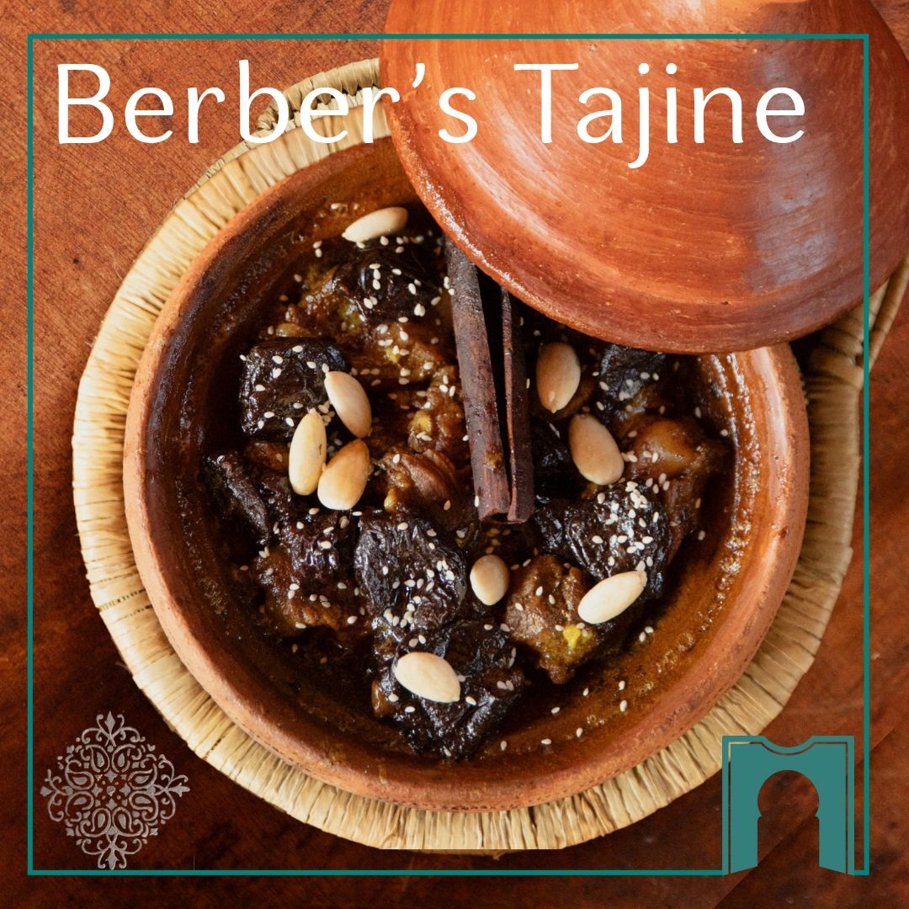
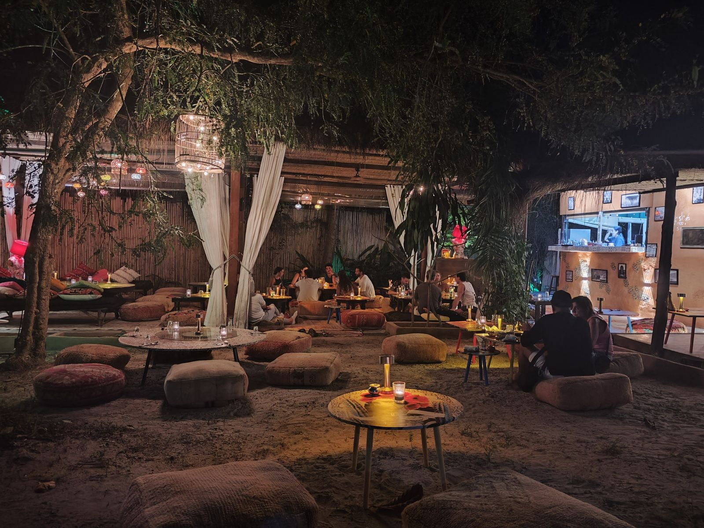
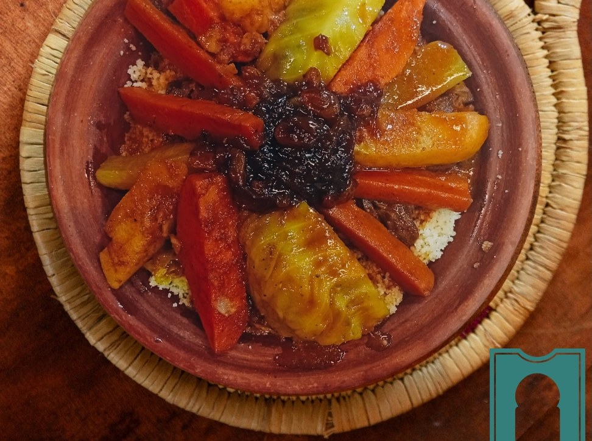
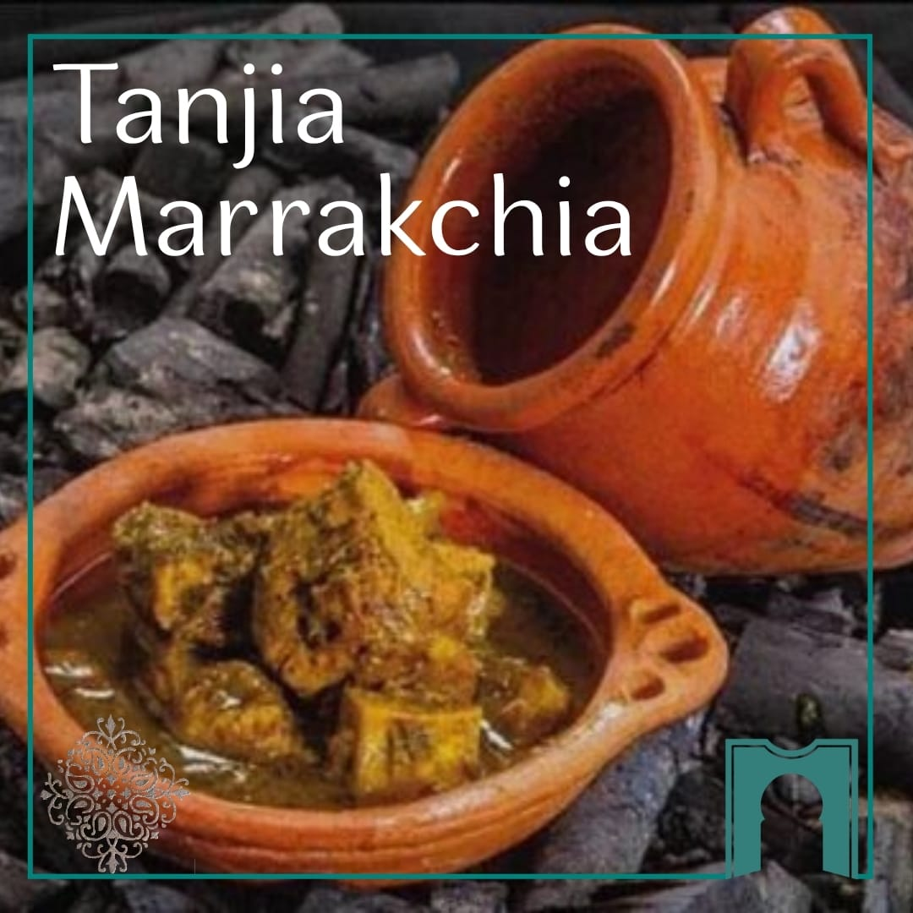
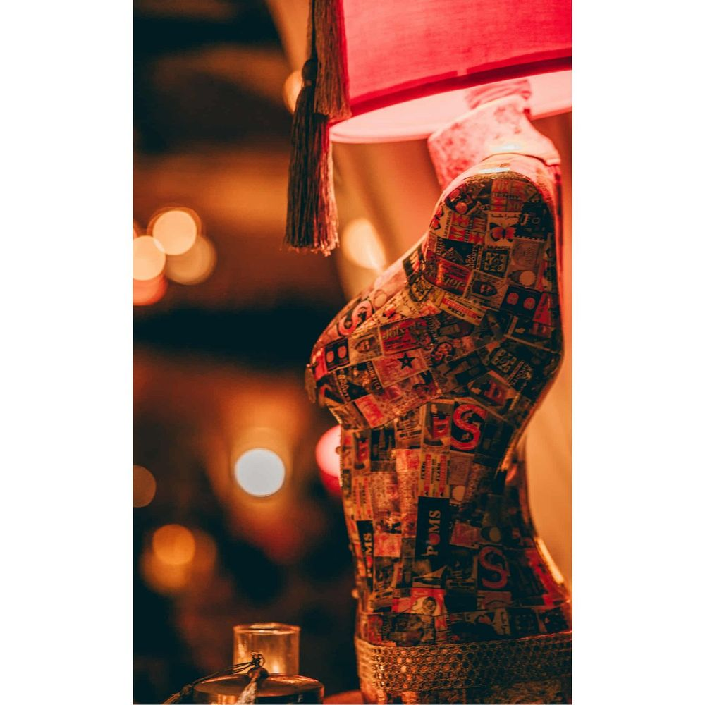
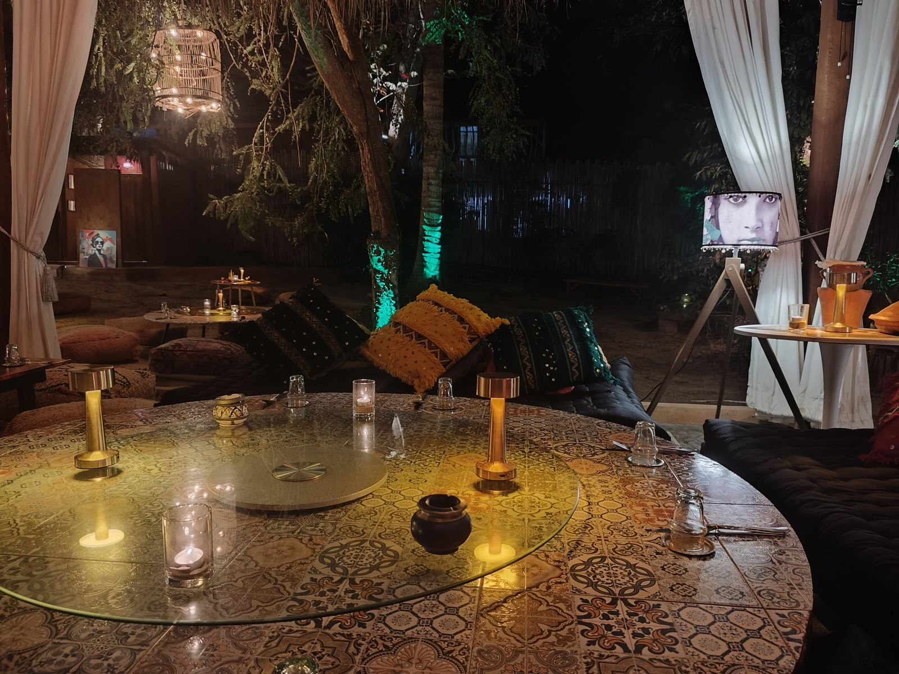
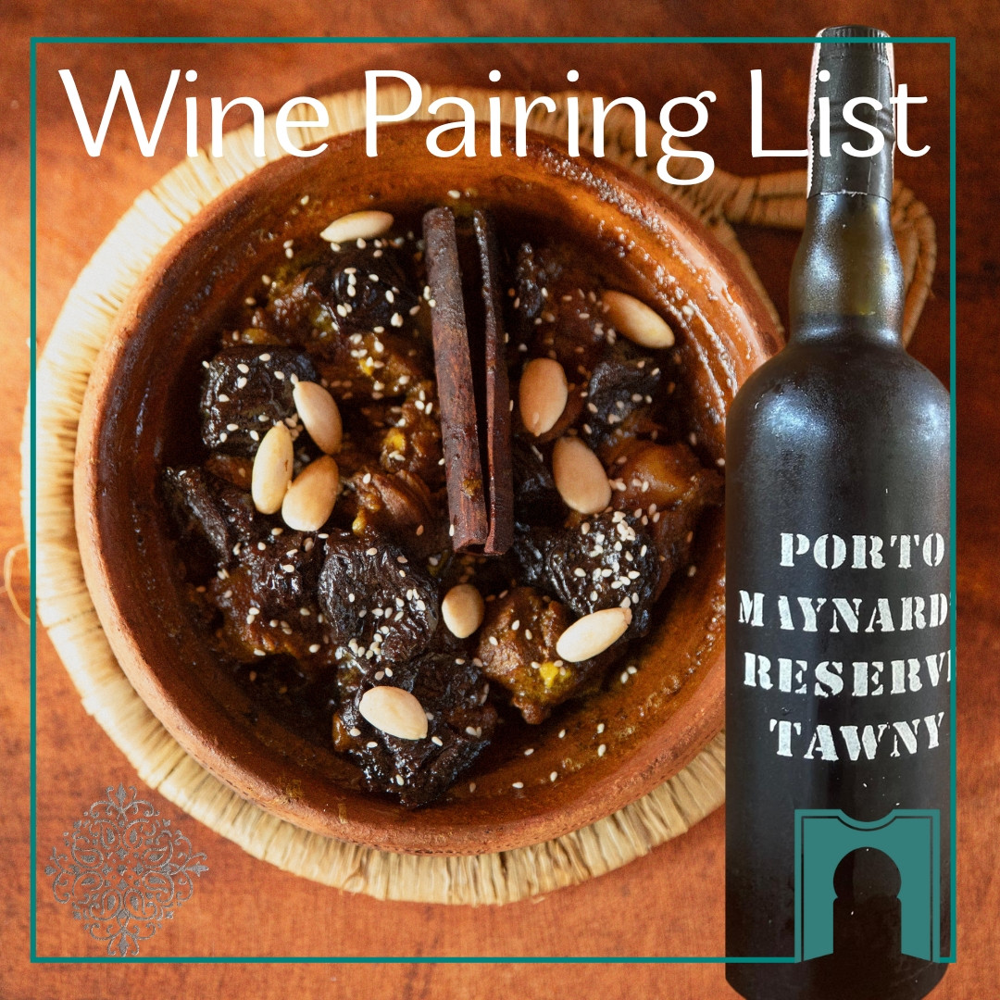

Tajines
Fire-cooked, slow-simmered for hours — sweet meets savoury.
Hin Kong Road, Sri Thanu area
Koh Phangan, Thailand
Tue–Sat · 7:00–10:30 PM

A hidden Moroccan gem near Sri Thanu & Hin Kong. Fire-cooked tajines, slow-simmered tanjias and candlelit garden dinners — rooted in tradition, slow cooked with care.
Tucked away near Sri Thanu and Hin Kong — just minutes from The Alcove, Orion Healing Center and Bliss Villas — Dar Mansour is a soulful, immersive dining experience on the west coast of Koh Phangan.
Rooted in the wisdom of the Dadas, our menu blends Berber, Andalusian, Jewish and Saharan influences — where sweet meets savoury, and vegetables are roasted with patience and care. Every detail, from handcrafted tiles to candlelit tables, is curated to slow you down and welcome you home.
Read our story"Dar Mansour brings the soul of contemporary Moroccan hospitality to Koh Phangan."Slow food · Art · Culture · Human connection
At Dar Mansour, the experience begins long before your arrival. As one of Koh Phangan's only Moroccan slow food restaurants, every dish is made to order — served only by reservation, because dishes like tanjia marrakchia and fire-cooked tajines need time, love and patience to reveal their full soul.
Advance booking via WhatsApp, to offer a curated, intimate experience for every table.
Main dishes pre-ordered before 2 pm — honouring long cooking times and avoiding any wait on arrival.
No mass prep, no leftovers. Each dish is cooked fresh, just for you, at the rhythm of the ingredients.
Limited to 40 guests a night. Slowness supports depth, care and quality — for the planet and for tradition.
Inspired by the Dadas — the silent guardians of Moroccan family recipes — our kitchen celebrates the authentic essence of Morocco: slow-cooked dishes full of generosity, depth and soul.

Fire-cooked, slow-simmered for hours — sweet meets savoury.

Hand-rolled semolina, steamed four times until light and airy.

The Marrakchi speciality — cooked low and slow in its clay urn.
Dar Mansour is the vision of Maïja — a creative spirit who spent over 30 years immersed in Moroccan culture — and Bruno, a French entrepreneur who fell in love not only with Morocco, but with its most inspired ambassador.
Together they imagined a place where every meal is a story, every guest is welcomed like family, and every detail — from spices to music — carries the soul of Moroccan hospitality.
Meet the founders
Art Direction · Maïja
Some evenings deserve more than a restaurant. Birthdays, anniversaries, proposals, honeymoons or intimate gatherings — thoughtfully curated in our peaceful candlelit garden between Sri Thanu and Hin Kong.
Plan Your Celebration
Wine PairingWine here is more than a drink — it's a dialogue with the dish. We are proud to offer Koh Phangan's only dedicated Moroccan wine pairing menu, each label selected to elevate the warmth and aromatic depth of our slow food.
At The Mansour Bar, cocktails are a story, a scent, a spark of memory — from Rock the Casbah with Ras El Hanout syrup to the infamous Mansour's Jasminade.
Explore wine & cocktails"As half Moroccan… I was eating and crying, crying and eating. You can feel the love in every bite."
"We dined seated on the floor, surrounded by carpets and lanterns — just like a Moroccan riad. A magical family evening."
"Deeply authentic Moroccan cuisine that blew me away. Cozy, stylish and full of charm."
"We were welcomed like old friends by Maija and Bruno. Msemen starters, slow-cooked tajines — everything was perfect."
"It felt like being transported to a secret riad in Marrakech. A hidden gem with a beating heart."
"As a Moroccan living in Koh Phangan, it felt amazing to feel at home instantly. More than a meal — an experience."
Featured in Golf du Maroc magazine among the world's finest Moroccan culinary destinations — just two months after opening. A culinary gem carrying the Moroccan soul across continents.
We operate on reservation only, with main dishes pre-ordered via WhatsApp before 2 pm on the day of your booking. Tell us of any allergies or dietary needs — we'll do our best to adapt while staying true to our recipes.
{kind=link}
{kind=link}
{kind=link}
{kind=link}
{kind=link}
{kind=link}